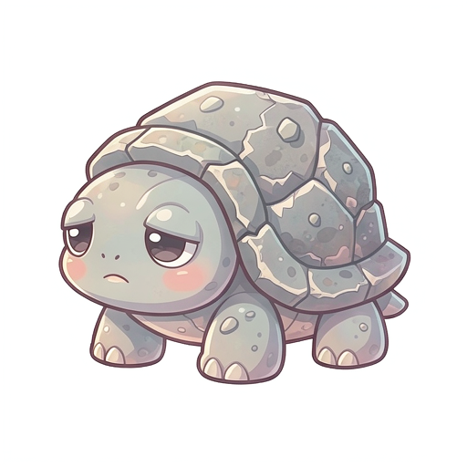
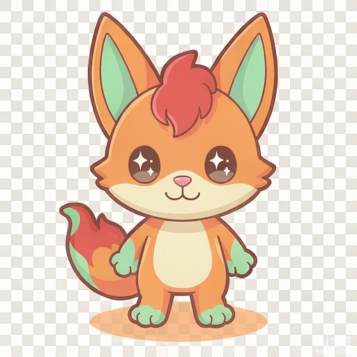

💰 经济水槽模型 森灵币产出 → 消耗闭环
产出（水龙头）
| 来源 | 作用域 | 全流程产出 | 占比 | 说明 |
|---|---|---|---|---|
| 击杀掉落 | 局内 | 29,362 | 70% | 全流程（点满全部强化+解锁）累计击杀掉落的森灵币，约 300 币/局 |
| 通关结算 | 局内 | 9,228 | 22% | 10 关通关结算奖励，约 100 币/局（随关卡递增） |
| 首次通关加成 | 局内 | 2,097 | 5% | 每关首次通关双倍结算（一次性），鼓励探索新关卡 |
| 每日任务 | 局外 | 1,259 | 3% | 每日任务稳定小额产出 20 币/日，保底留存 |
消耗（下水道）
| 去向 | 作用域 | 全流程消耗 | 说明 |
|---|---|---|---|
| 永久强化 | 局外 | 29,218 | 15 项属性/元素/经济/生存永久强化的总消耗（data/meta_upgrades.json 几何成本求和） |
| 英雄解锁 | 局外 | 3,500 | 3 位新英雄（雷羽鹰 800 / 霜甲熊 1200 / 焰心术士 1500）的一次性解锁 |
全流程总产出 41,946 币，总消耗 32,718 币，积压率 0.22（<=0.3 健康）。消耗吃掉 78%，留存 22% 作「存币待购」余量，经济不通胀、不枯竭。
📊 分类总消耗 五类永久强化的森灵币投入对比
基础属性9,676
元素亲和9,485
经济加成5,140
生存续航4,917
英雄解锁3,500
🌿 永久强化清单 共 18 项，按分类分组 · 成本几何增长
cost(level) = round(base * growth^(level-1))
基础属性 5 项 · 总投入 9,676 币
利爪之魂满级 10 级damage
伤害+3%/级
伤害 +3%/级。与局内「锐爪」叠加，跨局把天花板越抬越高。
meta_atk · Lv1=60 → Lv10=894 · 满级总投入 3,275鹰眼满级 6 级damage
暴击率+1%/级
暴击率 +1%/级。需搭配局内「致命」才划算，是后期暴击流的跨局底子。
meta_crit · Lv1=80 → Lv6=608 · 满级总投入 1,663生命之源满级 10 级defense
生命+4%/级
最大生命 +4%/级。局外养成的第一站，最稳的生存底子，任何流派都吃得下。
meta_hp · Lv1=50 → Lv10=745 · 满级总投入 2,731磁石之触满级 8 级utility
拾取范围+10%/级
拾取范围 +10%/级。减少追金币的走位损耗，经济流的效率地基。
meta_pickup · Lv1=30 → Lv8=245 · 满级总投入 861风行足满级 8 级utility
移速+2%/级
移动速度 +2%/级。拉扯与躲技能的地基，风筝流前置。
meta_spd · Lv1=40 → Lv8=327 · 满级总投入 1,146元素亲和 5 项 · 总投入 9,485 币
土之亲和满级 5 级element
土伤+2%/级
土元素伤害 +2%/级。与「结晶(护盾)」反应线叠乘，偏攻防一体。
meta_earth · Lv1=120 → Lv5=786 · 满级总投入 1,897火之亲和满级 5 级element
火伤+2%/级
火元素伤害 +2%/级。与局内「焚心」、灼烧反应线叠乘，火系玩家的跨局专精。
meta_fire · Lv1=120 → Lv5=786 · 满级总投入 1,897光之亲和满级 5 级element
光伤+2%/级
光元素伤害 +2%/级。与「光合(回血+急速)」反应线叠乘。
meta_light · Lv1=120 → Lv5=786 · 满级总投入 1,897水之亲和满级 5 级element
水伤+2%/级
水元素伤害 +2%/级。与「蒸发 ×2.0」反应线叠乘。
meta_water · Lv1=120 → Lv5=786 · 满级总投入 1,897木之亲和满级 5 级element
木伤+2%/级
木元素伤害 +2%/级。与「腐朽(中毒蔓延)」DoT 线叠乘，DoT 流核心。
meta_wood · Lv1=120 → Lv5=786 · 满级总投入 1,897经济加成 3 项 · 总投入 5,140 币

聚宝盆满级 5 级economy
金币+5%/级
金币收益 +5%/级。养成自己的「钱生钱」，点满后回本周期显著缩短。
meta_coin · Lv1=100 → Lv5=655 · 满级总投入 1,581
悟性满级 5 级economy
经验+5%/级
经验收益 +5%/级。加速局内升级节奏，间接多拿局内构筑卡。
meta_exp · Lv1=100 → Lv5=655 · 满级总投入 1,581家底满级 5 级economy
开局+60币/级
每局开局 +60 森灵币。让「重开一局」从零起步更顺滑。
meta_startcoin · Lv1=150 → Lv5=759 · 满级总投入 1,978生存续航 2 项 · 总投入 4,917 币
铜墙铁壁满级 5 级defense
减伤+1%/级
减伤 +1%/级。对高频小伤（小兵围殴）收益极高，后期硬抗 BOSS 的底气。
meta_armor · Lv1=120 → Lv5=786 · 满级总投入 1,897涅槃满级 3 级defense
复活+1/级
每局阵亡自动复活 +1 次（恢复 50% 生命）。昂贵的容错保险，冲高关卡必备。
meta_revive · Lv1=500 → Lv3=1,620 · 满级总投入 3,020英雄解锁 3 项 · 总投入 3,500 币

解锁·霜甲熊满级 1 级unlock
解锁新英雄
解锁新英雄「霜甲熊」（冰元素，重装坦克）。占位图（待云端出图替换为正式立绘）。
unlock_bear · Lv1=1,200
解锁·雷羽鹰满级 1 级unlock
解锁新英雄
解锁新英雄「雷羽鹰」（雷元素，高速爆发）。占位图（待云端出图替换为正式立绘）。
unlock_eagle · Lv1=800
解锁·焰心术士满级 1 级unlock
解锁新英雄
解锁新英雄「焰心术士」（火元素，法术炮台）。占位图（待云端出图替换为正式立绘）。
unlock_mage · Lv1=1,500📐 属性词汇表 永久强化 effects 字段口径
| 字段 | 含义 |
|---|---|
maxHpPct | 最大生命加成（百分比，每级叠加，跨局永久） |
atkPct | 伤害加成（百分比，每级叠加） |
moveSpdPct | 移动速度加成（百分比） |
pickupRangePct | 拾取范围加成（百分比） |
critRate | 暴击率（0–1，百分点叠加） |
elementDmgPct | 元素伤害加成（百分比，按元素区分，与 element_matrix 五元素一一对应） |
coinGainPct | 金币收益加成（百分比，加速后续养成） |
expGainPct | 经验收益加成（百分比，加速局内升级） |
startingCoins | 开局金币（固定值，每级叠加） |
armorPct | 减伤（百分比，每级叠加） |
revive | 阵亡自动复活次数（固定值） |
unlock | 解锁（英雄/技能，一次性，无数值叠加） |